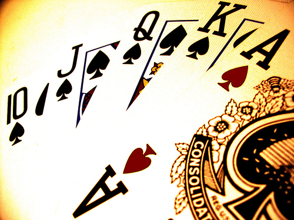

La tributación del poker será en base a las ganancias netas
Con nocturnidad y alevosía llegaba hasta nosotros a través de El País una de las noticias más esperadas por la comunidad de jugadores de poker y jugadores online en general: la tributación para el jugador de poker consistirá en descontar las pérdidas de las ganancias obtenidas a través del juego y declarar a través de la tabla de IRPF. Todas las alarmas saltaban cuando el Ministro de Hacienda, Cristóbal Montoro, anunciaba por la tarde que el Estado gravará el 20% a las ganancias superiores a 2.500 euros para los premios de ONCE y Loterías del Estado. Esta noticia, a priori, podría haber resultado en anécdota para nosotros de no ser porque incluía un pequeño párrafo que hacía referencia a las apuestas por internet. El Gobierno, en cambio, permitirá compensar las pérdidas en otros juegos como el bingo o las apuestas por internet (que tributan ya al tipo marginal y seguirán haciéndolo) con los beneficios en esos juegos. Solo tributarán por la ganancia neta. En ese punto, este párrafo, ligeramente ambiguo, se convertía en la llama que encendía el foro de Poker-Red, repleto de lectores en busca de respuestas más concretas. Uno de nuestros foreros, “suripanto”, decidía ponerse en contacto con El País para que intentasen confirmar la noticia. Me acaban de confirmar en El País que es así, dice que lo tienen por escrito y sólo ellos (por eso no lo dicen otros medios). Concretamente me dice que de lo que se trata es de que van a añadir al famoso "No se consideran pérdidas partimoniales las debidas a juegos de azar" lo siguiente: "que excedan de las ganancias obtenidas en el transcurso del periodo fiscal" (más o menos, no es literal). Es decir, que se podrán compensar ganancias y pérdidas durante el año. Probablemente, alguien en la redacción de El País se dio cuenta de que este párrafo tenía una implicación importante en una comunidad grande de jugadores online y decidieron ampliar la noticia, publicando una más extensa y completa a medianoche. En ella ya se afirma de forma más clara que la tributación tanto para los jugadores online como para los jugadores de casino será el resultado de restar las pérdidas a las ganancias que se produzcan en estas actividades y declarar este cómputo a través de la tabla del IRPF. En el propio artículo mencionan al forero “suripanto”, que hizo algunas declaraciones que definen muy bien la situación que hemos vivido durante los últimos meses. Esta normativa nos tenía en vilo. Para los que apostamos por internet es muy importante ese cambio. Para ganar dinero en esto, hay que jugar muchas manos. Si se tributa por las que ganas pero no puedes descontar las que pierdes, es muy complicado ganar algo y no tiene sentido jugar. El cambio en la situación actual se producirá a través de una modificación en la Ley del IRPF, añadiendo un texto que rezará más o menos así. No se podrán deducir aquellas pérdidas que excedan de las ganancias obtenidas en el juego en el mismo periodo. Según El País, esta medida tendrá efecto retroactivo, es decir, que tendrá vigor desde el 1 de enero de 2012. Ésta es, sin duda, una gran noticia para los jugadores online, que pueden ver desaparecer esa inseguridad jurídica que acechaba a toda la comunidad desde que entrase en funcionamiento la regulación del juego online.
EPT San Remo
El viernes comenzó una nueva edición del EPT de San Remo. Estamos en el día 2 por lo que todavía queda mucha tela que cortar, pero abro el post para que vayamos comentando las principales incidencias que vayan sucediendo.. 
PokerStars para android
no se si sabreis que ya ha sacado PokerStars su soft para android....... estuve ayer probandolo y la verdad que es la polla..!!!.. como era de esperar, la mayor compañia de poker del mundo ha vuelto a "petarlo" y se ha sacado un programa para movil muy completo, puedes jugar cualquier tipo de partida,cash,sit&go,zoom o torneos....y se puede hasta multitablear.!!! :lol: :lol: se supone que iran mejorandolo con el tiempo...pero por el momento ya han hecho un muy buen trabajo.... http://www.PokerStars.es/mobile/
Ronaldo se pasa al poker =O
En la actualidad asociamos casi automáticamente la palabra Ronaldo al nombre Cristiano. No obstante, antes que CR7 empezase a triunfar en los campos de fútbol, dicha palabra hacía referencia a otro delantero, Ronaldo Luís Nazário de Lima, que jugó en el Barcelona, el Inter de Milán y el Real Madrid, y que, entre otros méritos deportivos, fue el máximo goleador del Mundial de Corea y Japón en 2002, que ganó la selección de Brasil. “El Fenómeno” está haciendo sus pinitos en el mundo del poker. Gracias a nuestros compañeros de pokerpt.com hemos podido conocer que el pasado fin de semana jugó el primer gran torneo en vivo de su vida y fue el centro de atención, como cuando jugaba al fútbol. El evento fue el torneo MasterMind, celebrado en el Espaço M de Sao Paulo y disputado por los mejores jugadores de Brasil. El astro fue el encargado de inaugurar el evento pronunciando el típico “Shuffle Up and Deal”. Compartió mesa con jugadores de la talla de André Akkari, Igor Federal, Thiago Decano o Felipe Mojave, y con el periodista de TV Globo Bruno Laurence. No les duró mucho a los tiburones. Ronaldo fue eliminado el Día 1A con un tremendo riverazo. Llegó al all-in en un flop que tenía las cartas AQ5, teniendo en mano AQ. Su rival le pagó con A5 y el river fue un nuevo 5. Tras su eliminación, el delantero, que fue todo un portento hasta que engordó, concedió una entrevista a Tv Poker Pro, en la que reconoció haber disfrutado mucho de esta primera experiencia en el poker en vivo: “He perdido todas las fichas en la mano más injusta que he visto desde que juego al poker. Pero estuvo bien; me divertí. La mesa fue muy divertida. Nunca había jugado un torneo profesional y para ser mi primera vez me he encontrado muy bien. Ahora tengo ganas de jugar más torneos”. Veremos si Ronaldo sigue el camino abierto por otros futbolistas como Santi Cañizares o Poli Rincón.
 Jesus Civera
Jesus Civera